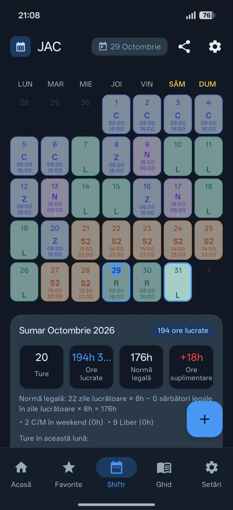
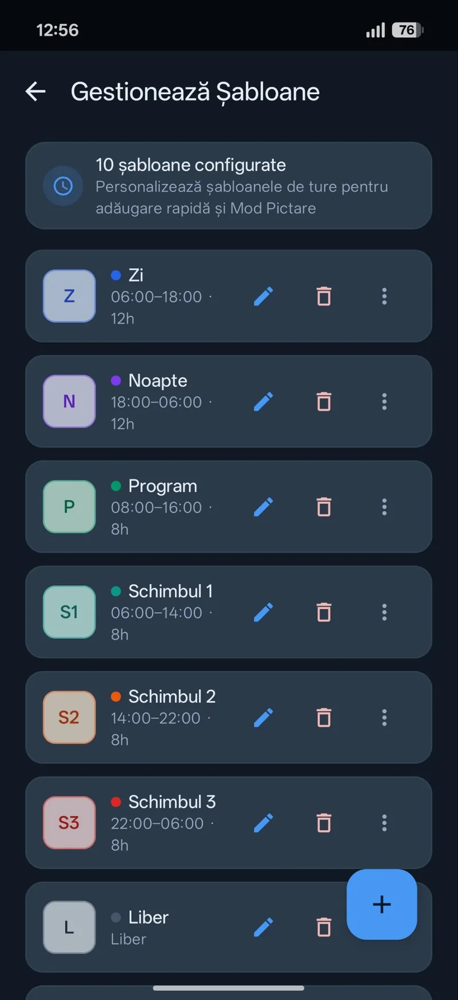
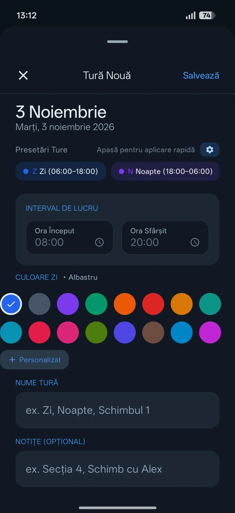
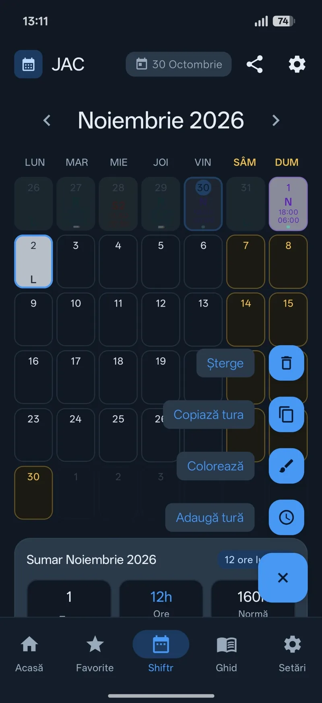
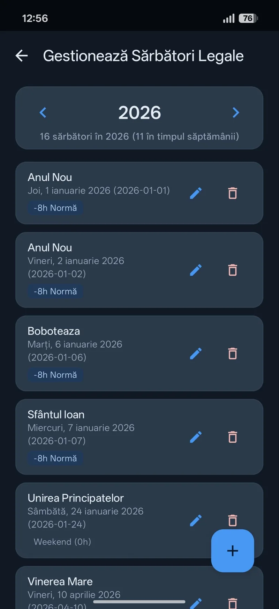
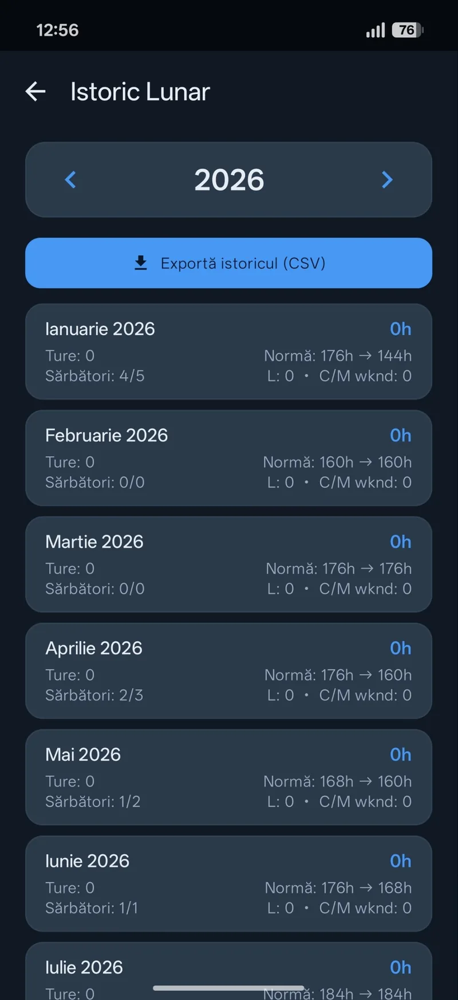
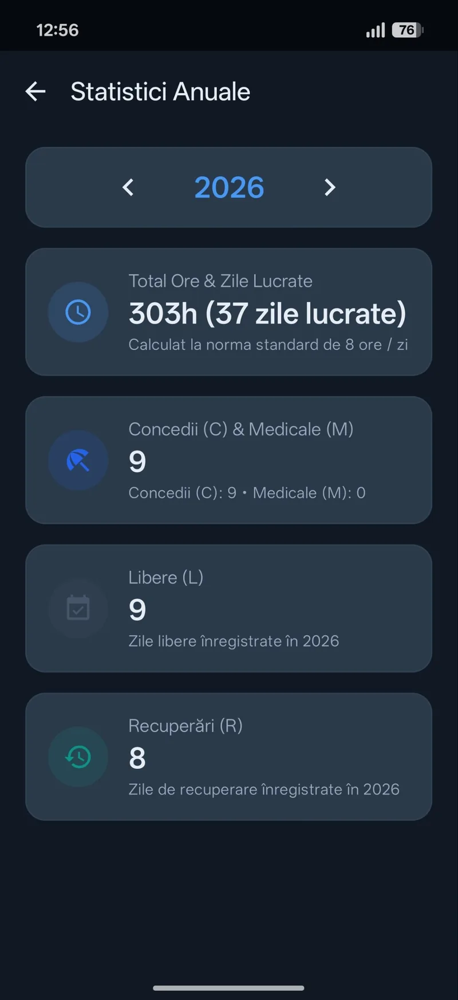
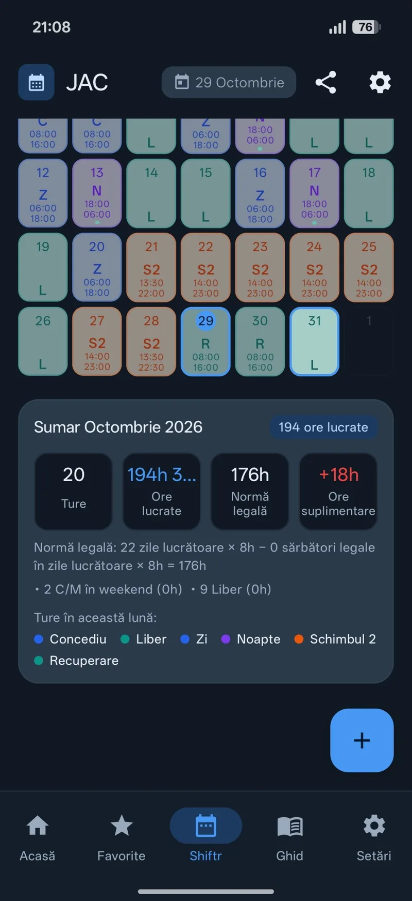
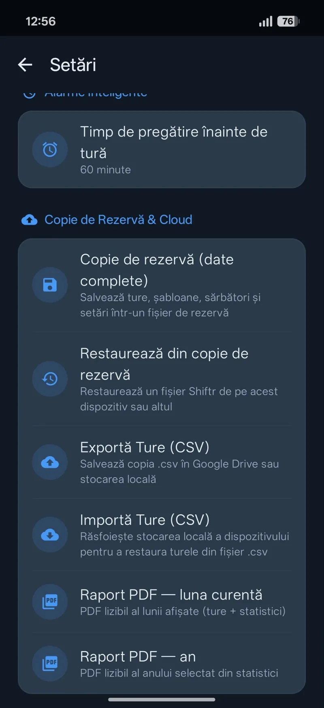
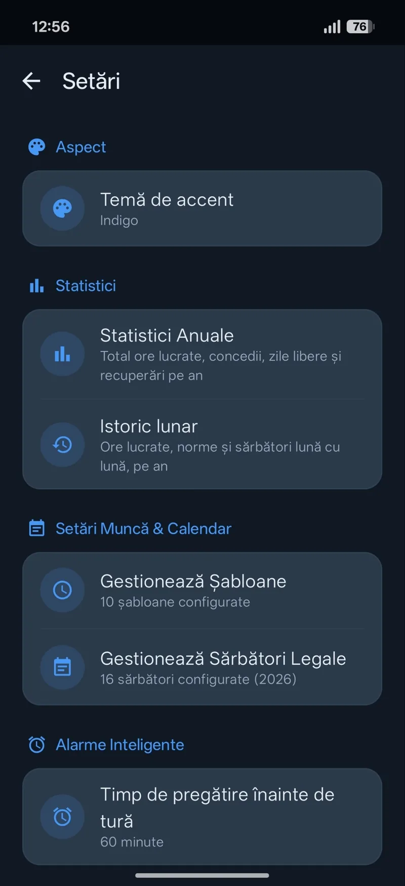

Calendar
Știi exact
cât ai muncit.
Notezi turele. Luna se adună singură: ore lucrate, norma legală și orele suplimentare.
Cere acces la beta
Tot Shiftr, dintr-o privire
Programul tău,
sub control.
Ecrane reale din aplicație. Atinge oricare ca să-l vezi întreg. Valorile sunt exemple din capturi.
Șabloane
10 ture gata făcute.

Tură nouă
Ore, culoare, notiță.

Din calendar
Adaugi, copiezi, colorezi, ștergi.

Sărbători legale
Cât scade din normă.

Istoric lunar
Lună cu lună, cu export.

Statistici anuale
Tot anul, într-un panou.

Sumarul lunii
Orele peste normă, la vedere.

Datele tale
Backup, CSV, PDF.

Setări
Temă, statistici, alarmă.

Calculele Shiftr au rol orientativ personal. Evidența oficială a timpului de muncă rămâne cea a angajatorului.
Întrebări.
Merge fără internet?
Da. Programul de ture e stocat pe telefon, așa că îl consulți și îl completezi fără conexiune.
Calculul orelor e oficial?
Nu. Shiftr calculează orientativ, din turele pe care le introduci tu.
E inclus gratuit?
Basic include Shiftr standard. PRO Individual și PRO Echipaj includ Shiftr nelimitat. Vezi prețurile.
Cine îmi vede turele?
Nimeni de la JAC. Dacă ai backup Android activ, datele pot ajunge în contul tău Google personal. Confidențialitate.
Mai vezi și


Intră în beta.
JAC e în testare închisă, doar pentru Android. Trimite un e-mail și cere acces.
Cere acces la betaSe deschide un e-mail către vladticu100@gmail.com